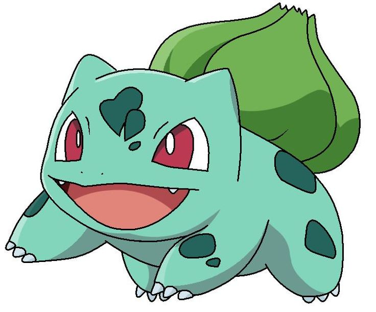
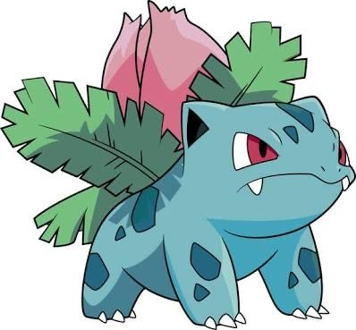
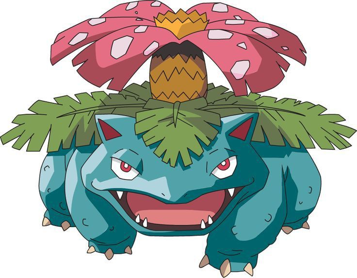
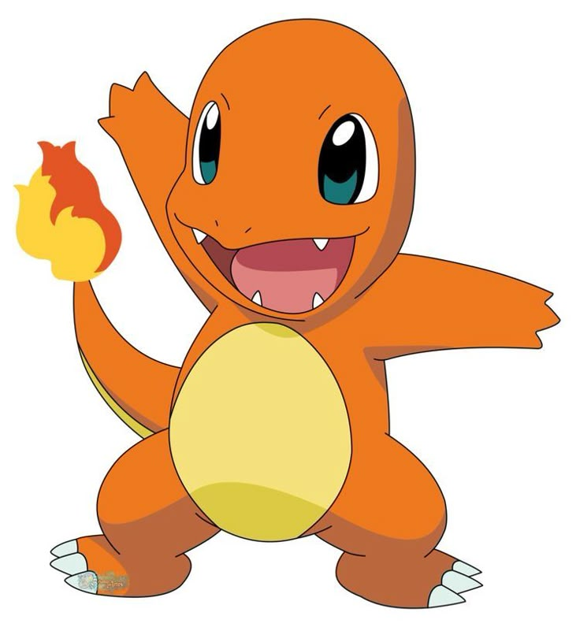
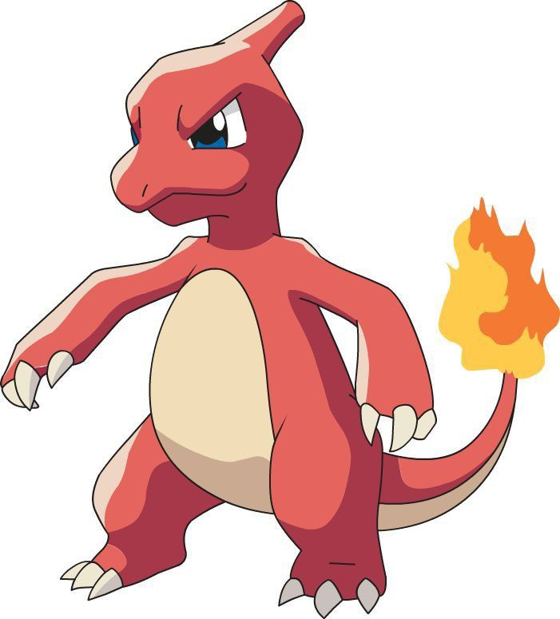
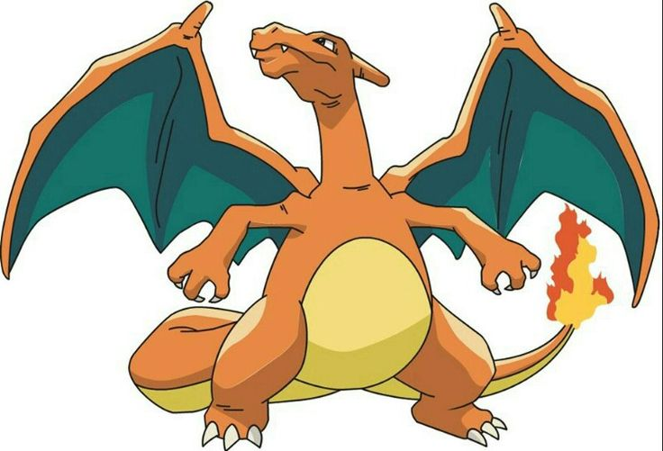
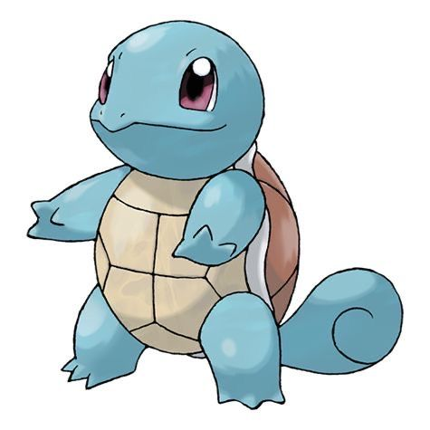
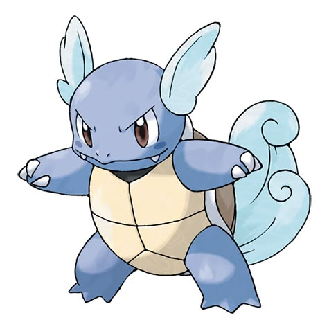
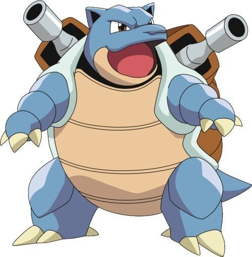

🌱 BULBASAUR 🌱
Bulbasaur é um Pokémon dos tipos Planta e Veneno. Desde o nascimento ele possui uma pequena semente em suas costas. Conforme ganha experiência, essa semente cresce e acumula energia, tornando-se cada vez mais forte. É conhecido por ser um Pokémon calmo, inteligente e uma excelente escolha para quem está iniciando sua jornada.
Seus ataques do tipo Planta são muito eficientes contra Pokémon dos tipos Água, Terra e Pedra. Ao evoluir, Bulbasaur transforma-se em Ivysaur e depois no poderoso Venusaur, um dos Pokémon mais fortes da primeira geração.



🔥 CHARMANDER 🔥
Charmander é um Pokémon do tipo Fogo. Sua característica mais marcante é a chama localizada na ponta da cauda. Essa chama representa sua energia, sua saúde e sua força. Charmander é muito corajoso e nunca foge de um grande desafio.
Seus ataques de fogo causam bastante dano durante as batalhas. Conforme evolui, transforma-se em Charmeleon e posteriormente no poderoso Charizard, um dos Pokémon mais famosos de toda a franquia.



💧 SQUIRTLE 💧
Squirtle é um Pokémon do tipo Água. Seu casco resistente serve para protegê-lo dos ataques e também auxilia durante sua defesa nas batalhas. É conhecido por ser inteligente, equilibrado e muito companheiro.
Seus fortes jatos de água conseguem derrotar diversos adversários. Ao ganhar experiência, evolui para Wartortle e depois para Blastoise, que possui enormes canhões em seu casco.



🎥 Vídeos Pokémon
Utilize os botões para navegar pelos vídeos.